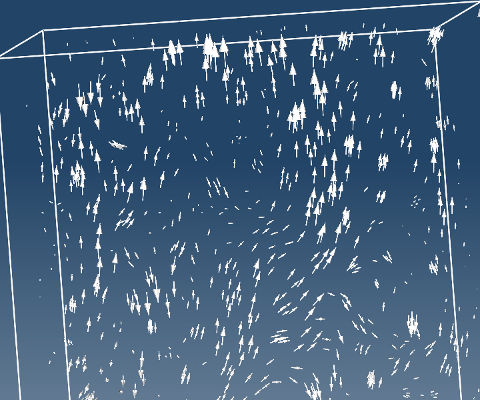

Vector field helps to visualize fields such as velocity, electric and magnetic field, heat flow and forces.
Vector field can be created on any model entity or interpolated surface such as Cuts and ISO surfaces.
